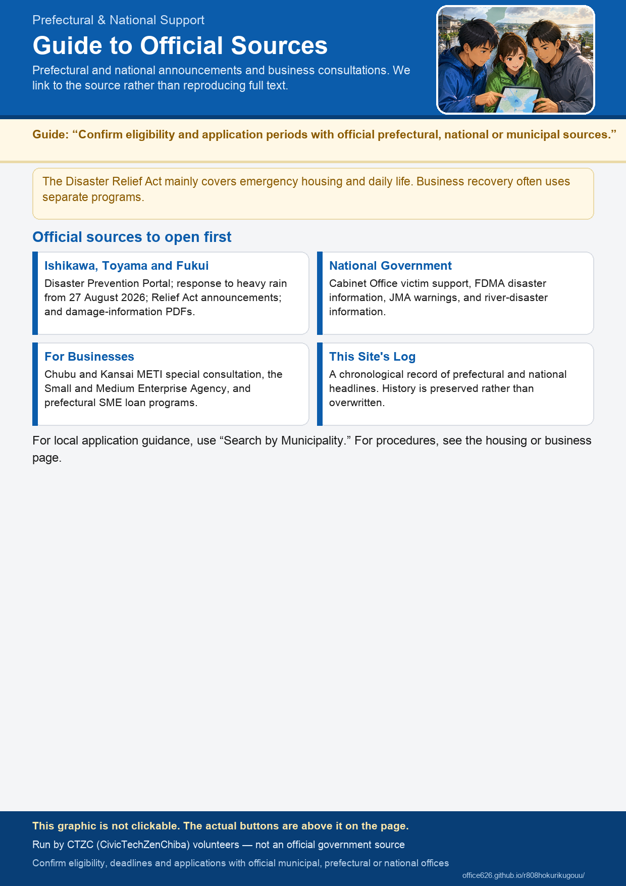

Prefectural and National Support Information
This page links to official information and does not reproduce its content. Check each linked source. Preliminary figures may change.
Prefectural and National Official Notices (with status and update detection)
Relief donations, Disaster Relief Act, livelihood-rebuilding support, business financing and more (Japanese). Status and check dates reflect when a volunteer last looked. Page text is checked automatically every few hours (“Update detected” shows the detection time).
Chiba Prefecture
National government
Chiba Prefecture Government
National Government Government
- Cabinet Office Disaster Management Information (Japanese)
- Support Programs for Disaster Victims (Japanese)
- Fire and Disaster Management Agency Disaster Information (Japanese)
- FDMA Chiba Heavy Rain, Eighth Report (PDF; Japanese)
- Japan Meteorological Agency Warnings and Advisories for Chiba (Japanese)
- River Disaster Prevention Information (Japanese)
For Businesses Government
Damage to shops and factories is often handled separately from residential support.
Prefectural and National Records
